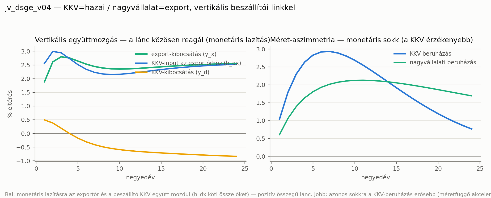

Modell-dokumentáció · euró/KKV DSGE · belső
Hogyan válik szét a modellben a kis- és a nagyvállalat, miért éppen egy vertikális beszállítói szerkezettel, és milyen alternatívákat mérlegeltünk — az egyenletekkel, az eredményekkel és az elvetett utak indoklásával együtt.
A KKV a hazai, a nagyvállalat az export szektor; a kettőt egy vertikális beszállítói lánc köti össze (a KKV inputot ad az exportőrnek), méretfüggő pénzügyi akcelerátorral. Így az euró-hitelsokk pozitív összegű: a KKV egészsége az exportőrt is segíti — nem „a gyengébb meghal" mechanika.
A JV-mag reprezentatív vállalatait szét kell választani KKV-ra és nagyvállalatra, mert a tanulmány kutatási kérdése épp a KKV-hitelkörnyezet. A kérdés nem az, hogy válasszuk szét, hanem hogyan viszonyulnak egymáshoz — mert ez dönti el, hogyan gyűrűzik át rajtuk az euró-sokk.
Három megkülönböztetést viszünk be, mindhárom mögött adat vagy irodalom áll:
A KKV érzékenyebb pénzügyi akcelerátorral (magasabb külső finanszírozási prémium) és magasabb tőkeáttétellel — az Opten-panel medánjaiból.
A KKV rugalmasabb (alacsonyabb beruházási kiigazítási költség) — az „Audi-beszállító" logika: a kis cég könnyebben alkalmazkodik, ezért szervez ki hozzá a nagy.
A KKV kibocsátása input az exportőrnek (költséghányad s_kkv). Ez a fő újítás: a beszállítói lánc.
A 250+ fős cégek 70%-a exportőr, a 10–49 fősöknek csak 6%-a (Opten t02). Ez közvetlenül alátámasztja a leképezést: nagyvállalat = exportkapu, KKV = hazai, kétszintű beszállítói szerkezet — nem szimmetrikus verseny.
A KKV a hazai piacra termel és beszállít az exportőrnek; az exportőr a KKV-inputból + saját hozzáadott értékből állítja elő az exportot. Az euró-hitelsokk mindkét vállalattípus finanszírozását éri, de eltérő erővel (χ_S > χ_L), majd a láncon tovagyűrűzik.
A folytonos zöld nyíl a mennyiségi csatorna (a KKV fizikai inputot szállít), a szaggatott kék a költség-csatorna (a KKV ára beépül az export határköltségébe). A kettő együtt teszi a kapcsolatot pozitív összegűvé.
A réteg a JV-mag BK-biztos kétszektoros BGG-szerkezetére épül (közös tőke-bérleti ráta rk), és két új egyenlettel adja hozzá a vertikális linket. Minden változó log-eltérés a steady state-től.
Méretfüggő pénzügyi akcelerátor (típusonként, j = S, L)
A külső finanszírozási prémium (efp) a tőkeáttételtől (q+k−nw) függ; a KKV-nál χ_S = 0,06 > χ_L = 0,02, tehát ugyanaz a nettóvagyon-mozgás nagyobb prémium-választ ad. Innen jön a méret-aszimmetria endogén módon.
Rugalmassági aszimmetria (beruházás)
Alacsonyabb ψ = rugalmasabb beruházás. A KKV könnyebben alkalmazkodik — ezért is beszállító —, de ezt a rugalmasságot ma a hitelkorlát fojtja. Az euró oldja a korlátot → felszabadítja a rugalmasságot.
Vertikális link — költség-csatorna
Az export határköltsége (mcx) a saját hozzáadott értéke és a KKV-input ára — amit a KKV határköltsége (mc_d) ad, skkv=0,20 súllyal. Ha a KKV olcsóbb hitelhez jut → több tőke → alacsonyabb rk és mc_d → olcsóbb input az exportőrnek.
Vertikális link — mennyiségi csatorna
Az exportőr KKV-input-kereslete (h_dx) az exporttal (xx) skálázódik, és a KKV-kibocsátás keresletének része (shv). Így egy exportfellendülés felhúzza a hazai KKV-t is — a lánc mindkét irányban működik.
A modell megoldódik (Blanchard–Kahn teljesül), és a réteg két kulcsmechanizmusa működik: a lánc együtt mozog, és a KKV érzékenyebb.

Három elv vezetett: (1) az adat vezéreljen; (2) az eredmény legyen egyensúly, ne előre eldöntött; (3) a magyar valóság szerkezetét képezze le.
Öt alternatíva volt az asztalon. Mindegyiket konkrét okból vetettük el; az egyiket ténylegesen kipróbáltuk, és megbukott a stabilitási teszten.
A KKV és a nagyvállalat helyettesítő terméket ad, ugyanazért a keresletért versenyeznek. Miért nem: tökéletes helyettesítőknél, ha a KKV kevésbé produktív, az eredmény mechanikus — „az olcsóbb nyer, a gyengébb meghal". Ez előre eldöntött, politikailag terhelt, és nem a magyar szerkezet (a KKV nem az Audival versenyez, hanem beszállít neki). Másodlagos elemként megtartható, de nem ez a fő szerkezet.
Az első, ambiciózusabb változatunk: mindkét szektor saját tőkével, saját bérleti rátával, külön CPI/termelői-ár blokkal. Miért nem: ténylegesen kipróbáltuk — megbontotta a Blanchard–Kahn feltételt („no stable equilibrium"). A robusztus verzió ezért a JV közös-rk szerkezetére épül, és a KKV-input árát a KKV határköltsége (mc_d) adja. A szektor-specifikus tőke egy későbbi, gondos fejlesztési pont maradt.
KKV és nagyvállalat mindkét (hazai és export) szektorban, egymással versenyezve. Miért nem: nehezebb és több paramétert hoz be, miközben nincs rá adat-támogatás; ráadásul nem a vertikális tézist szolgálja, amit az Opten-adat sugall.
A hitel-transzmissziót egy explicit, monopolisztikus bankszektor adná, becsült marzsokkal. Miért nem: tucatnyi paramétert hozna be, amit az 5 éves, sokk-terhelt panelen nem tudunk fegyelmezni — a modell fele feketedoboz lenne. A pitch is ezért vetette el; a Gerali-féle ~60%-os átgyűrűzés kalibrációs horgony marad, nem futó kód.
Egy exogén szabály, ami kiszelektálja a gyenge cégeket. Miért nem: ez a végeredményt feltételezi, nem levezeti — tudományosan védhetetlen. Nálunk a cégek „halála/születése" az extenzív margón (hitelhozzáférés) endogén, és empirikusan is ezt találtuk: a heterogenitás a hozzáférésben van, nem a produktivitási küszöbben.